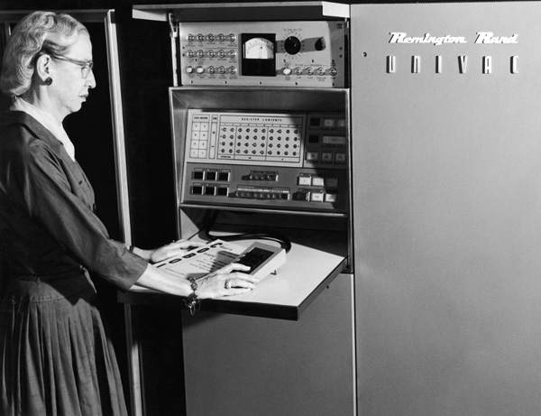

Buggolás
A bug eredetéről kering egy népszerű történet. Eszerint a Harvard Egyetem technikusai 1947. szeptember 9-én egy molylepkét találtak a Mark II nevű számítógép egy alkatrészében. Grace Hopper – az amerikai haditengerészet tisztje, egyben a modern számítógép-tudomány úttörője – megfogta szegény állatot, beragasztotta a gép működését dokumentáló naplóba, majd aláírta: „Megtaláltuk az első valódi bugot.” A történet úgy tartja, hogy így született meg a ma is használatos bug kifejezés, és ebből rögtön utána a debugging, vagyis a hibák javítására használt szó is.
Az első fordítóprogram
1949-ben Eckert-Mauchly Computer Corporation vállalat alkalmazottja lett mint matematikus és csatlakozott az UNIVAC I számítógép fejlesztő csoportjához. Az 1950-es évek elején a cég beolvadt a Remington Rand vállalatba. 1952-ben sikerült elkészítenie az első fordítóprogramot is, ez volt az A-0 fordítóprogram. "Senki nem hitt benne. Volt egy működő fordítóprogramom és senkit sem érdekelt. Azt mondták, hogy a számítógép csak aritmetikai műveletek elvégzésére képes." - mesélte Hopper." 1954-ben Hoppert a vállalat programozási igazgatójává nevezték ki. Részlege fejlesztette az első fordítóprogramra épülő programozási nyelveket például a MATH-MATIC és FLOW-MATIC programnyelvet is.